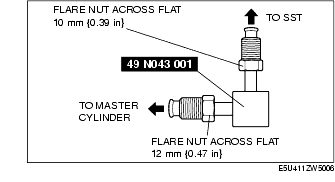
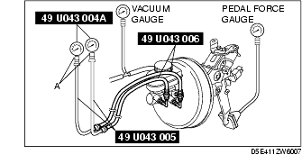
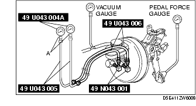

Workshop Manual ➭ BRAKES ➭ CONVENTIONAL BRAKE SYSTEM ➭ POWER BRAKE UNIT INSPECTION
POWER BRAKE UNIT INSPECTION
id041100801700
{: #wp1059776}
*Note*{: #wp1060972}
• The following inspection methods are simple inspection methods to judge the function of the power brake unit. {: #wp1060826}• If there is any malfunction in the power brake unit, replace the power brake unit as a single unit.
Without Using SST
Operation inspection
-
With the engine stopped, depress the pedal several times.
-
With the pedal depressed, start the engine.
-
If the pedal moves down slightly immediately after starting the engine, the unit is normal.
Vacuum function inspection
-
Start the engine.
-
After driving the vehicle for 1-2 min, stop the engine.
-
Depress the pedal with normal force.
-
If the first pedal stroke is long and becomes shorter with subsequent strokes, the unit is normal.
• If a problem is found, inspect for damage to or improper installation of the check valve and vacuum hose. After repairing, inspect again.
Vacuum loss function inspection
-
Start the engine.
-
Depress the pedal with normal force.
-
With the pedal depressed, stop the engine.
-
Maintain the pedal depressed for approx. 30 s.
-
If the pedal height does not change during this time, the unit is normal.
Using SST
Pre-inspection preparation
- Install the SST (49 N043 001) in the orientation shown in the figure. (with DSC){: #wp1060019}

*Note*{: #wp1060055}
• Install the SST (49 N043 001) to the master cylinder using a commercially available flare nut wrench.
- Flare nut across flat: 12 mm {0.47 in}
- Connect the SSTs, a vacuum gauge and a pedal force gauge to the master cylinder and bleed the air from the SSTs and the brake line. (Bleed the air from the SSTs through air bleeding valve A.)
With ABS

With DSC

Checking for vacuum loss (loaded condition)
-
Start the engine.
-
Depress the brake pedal with a force of 200 N {20.4 kgf, 44.9 lbf}.
-
With the brake pedal depressed, turn off the engine when the vacuum gauge reaches 68 kPa {510 mmHg, 20.1 inHg}.
-
Within 15 s right after stopping the engine, measure the lowest amount of vacuum.
-
If the lowest amount is 3.3 kPa {25 mmHg, 1.0 inHg} or less, the system is normal.
Lack of hydraulic pressure inspection
- With the engine stopped and the vacuum amount at 0 kPa {0 mmHg, 0 inHg} if the pedal force and fluid pressure correlation is within the specification, the system is normal.
**Power brake unit fluid pressure
+---------------------------------------------------------------------------------------------------------------------+ | Vacuum amount at o kPa {0 mmHg, 0 inHg} {: #wp1060406} | +============================================================+========================================================+ | Pedal force (N {kgf, lbf}) {: #wp1060445} | Fluid pressure (kPa {kgf/cm2, psi}) {: #wp1060448} | +------------------------------------------------------------+--------------------------------------------------------+ | 200 {20.4, 44.9} {: #wp1060348} | 620 {6.33, 90.0} or more {: #wp1060350} | +------------------------------------------------------------+--------------------------------------------------------+**{: #wp1060336}
Hydraulic pressure inspection
-
Start the engine and when the vacuum amount reaches 66.7 kPa {500 mmHg, 19.7 inHg}, depress the brake pedal.
-
At this time, apply the indicated pedal force and if the fluid pressure is within the specification, the unit is normal.
**Power brake unit fluid pressure
+-------------------------------------------------------------------------------------------------------------------------------+ | Vacuum amount at o 66.7 kPa {500 mmHg, 19.7 inHg} {: #wp1060618} | +======================================================================+========================================================+ | Pedal force (N {kgf, lbf}) {: #wp1060657} | Fluid pressure (kPa {kgf/cm2, psi}) {: #wp1060660} | +----------------------------------------------------------------------+--------------------------------------------------------+ | 200 {20.4, 44.9} {: #wp1060560} | 6,340 {64.65, 919.6} or more {: #wp1060562} | +----------------------------------------------------------------------+--------------------------------------------------------+**{: #wp1060548}